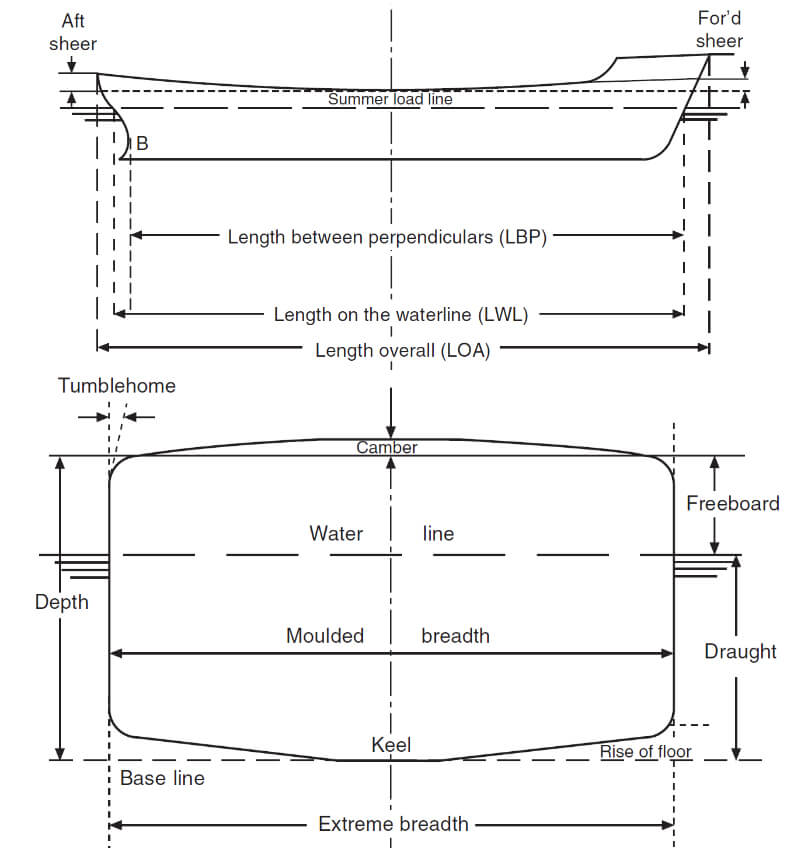
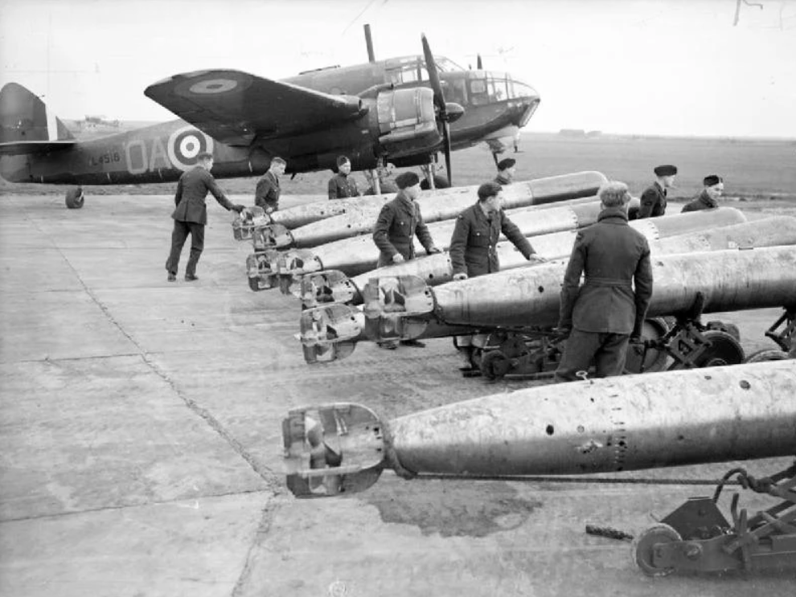
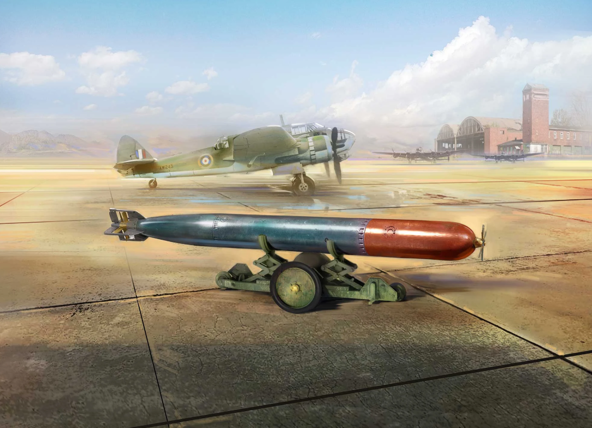
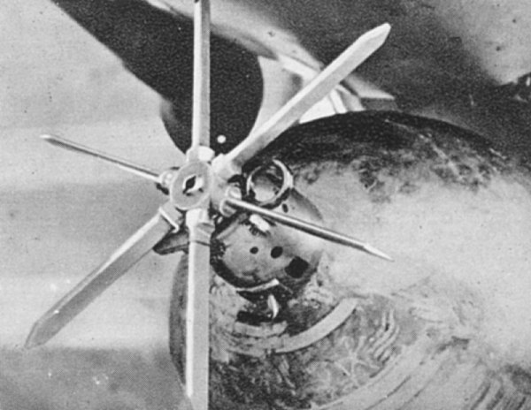
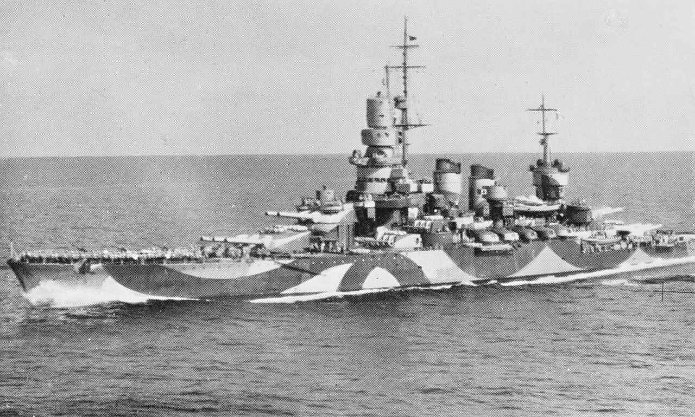
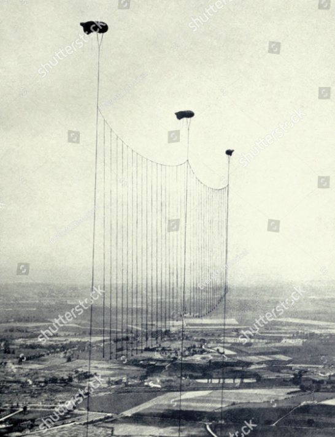
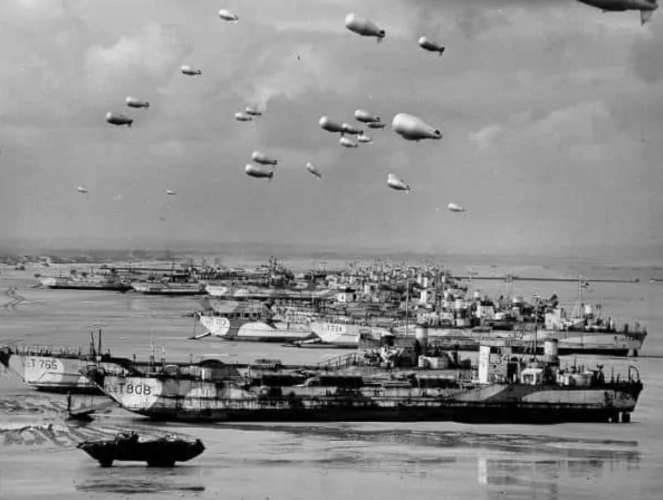
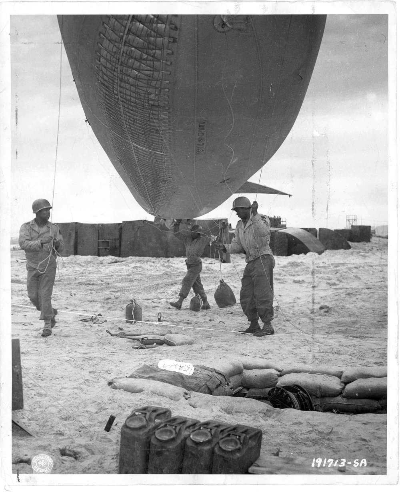

WW2 중 항모에서의 야간 작전 (16) - 어뢰 방어망을 넘으면 다음은?
게시: 2025-06-05T06:30:40+09:00
<더 느리게, 더 얕게> 1940년 7월 8일 새벽 다카르 항구에 정박한 프랑스 해군 전함 Richelieu를 향해 돌격하던 6기의 Swordfish 뇌격기들은 적도 인근에서는 지구 자기장이 약하기 때문에 자성 신관의 세팅이 달라야 한다는 것을 알고 있었을까? 그에 대해서 밝혀진 바는 없음. 그러나 영국해군은 자성 신관(magnetic pistol)과 충격 신관(contact pistol)을 둘 다 갖춘 듀플렉스 신관(Duplex piston)을 갖추고 있었고, 이 물건이 언제나 확실하게 작동하는 것은 아니라는 것은 알고 있었음. 새벽의 어둠을 틈타 적 항구를 기습하는 것은 딱 1번 가능한 일이고, 이럴 때 지나친 욕심을 부리기 보다는 '달걀을 모두 한 바구니에 담지 말라'는 격언처럼 분산 투자가 안전. 그래서 이 6기의 소드피쉬 중 3기의 어뢰에는 신뢰성 있긴 하지만 어뢰 방어망에 걸릴 확률이 높은 전통적 충격 신관을 달아 잠항 깊이를 7.2m로 맞춰놓았고, 나머지 3기의 어뢰에는 확실히 어뢰 방어망을 피할 것 같기는 하지만 과연 폭발할지 여부를 자신할 수 없는 듀플렉스 신관을 달아 잠항 깊이 11.5m에 맞춰 놓았음. 리셜리외의 흘수(draft) 깊이는 9.9m였으므로 어뢰 방어망 밑을 지나 아무런 장갑이나 어뢰 방어용 벌지가 없는 리셜리외의 바닥 밑에서 폭발하기를 기대했던 것. 참고로 다카르 항구의 수심은 12.7m였으므로, 까딱하면 듀플렉스 신관 어뢰들은 그냥 항구 바닥의 진흙에 처박혔을 수도 있었음.

(선박의 흘수, 폭, 길이 등이 특별히 중요해지는 것은 바다에서가 아니라 운하나 항구 등 좁은 곳. 흘수는 영어로 draught 혹은 draft라고 하는데, draught라고 쓸 때도 발음은 드래프트 라고 읽어야 함.) 그 결과는 어땠을까? 과연 무엇이 명중했고 무엇이 폭발했을까? 알 수가 없었음. 다만 확실한 것은 앉은뱅이 오리처럼 정지 상태로 정박한 리셜리외를 향해 발사된 6기의 어뢰 중 딱 1방만 리셜리외에 피해를 입혔다는 것. 프랑스 해군의 기록을 보면 리셜리외가 입은 피해는 우현 3번 스크루와 4번 스크루 사이의 공간에 7.5m x 7m 정도 크기의 구멍이 뚫리고 3번 스크루축이 휘었으며 선미에 금이 갔는데, 이건 고치기 힘든 피해로서 그 수리에 1년 이상이 소요되었음. 다만 이 피해를 입힌 것인 접촉 신관 어뢰였는지, 듀플렉스 신관 어뢰였는지는 전후에도 불분명. 완벽한 기습이었고 그냥 정지한 전함에 대고 어뢰 6방을 쏘았는데 1방 명중한 것이 실망스러운 결과였을까? 조종사들의 솜씨 측면에서는 그렇게 말할 수 있겠으나 영국해군 수뇌부는 '1발 맞았는데 전함을 완전히 작전불능 상태로 만들었다'는 것에 주목. 그 결과로 나온 것이 타란토 습격.

(영국 해군이 WW2 기간 중 애용한 Mark 12 항공 어뢰. 미국이나 독일 어뢰와는 달리 영국해군의 어뢰는 큰 기술적 문제 없이 잘 사용된 편이었다고.)

(영국 해군의 Mark 12 항공 어뢰의 그림. 무슨 플라스틱 모델의 표지 그림임. 어뢰 탄두 부분에 뭔가 프로펠러 같은 것이 보이는데 저게 뭘까? 혹시 일정거리를 나아간 뒤에야 신관이 작동되도록 해주는 arming propeller일까? 어뢰에도 안전 폭발 거리 확보를 위한 arming impeller가 있기는 하지만 저렇게 크지는 않음.)

(저 커다란 프로펠러처럼 보이는 것은 실은 회전하는 프로펠러가 아니라 whisker(수염)라고 부르는 일종의 촉수인데, 저기에 적함체가 닿으면 그 충격에 접촉 신관이 작동하여 탄두가 폭발하는 것. 그러니까 글자 그대로 어뢰는 스치기만 해도 죽는 것임.) 다카르 항구 습격 결과에 대한 추가적인 분석 결과, 아무래도 수심이 얕은 항구에서는 어뢰를 더 느리게, 그리고 더 얕은 잠항 수심으로 세팅하는 것이 맞다고 결론이 나옴. 다카르 항구 공격 때는 접촉 신관 어뢰나 자성 신관 어뢰나 모두 40노트의 속력으로 달리게 해놓았으나, 테스트를 해보면 더 빠르게 세팅을 해놓을수록 어뢰의 초기 다이빙 깊이가 더 깊어졌기 때문. 그리고 듀플렉스 신관 어뢰의 잠항 수심 세팅도 그렇게 깊게 하지 않는 것이 좋겠다는 결론이 나옴. 너무 깊게 할 경우 자기장 변화를 제대로 감지 못하여 기폭에 실패하거나 혹은 폭발하더라도 전함에 제대로 피해를 입히지 못한다고 판단했기 때문. 결국 수심 15m인 타란토 항구에 대한 어뢰 공격에서, 어뢰 방어망이 방어하는 깊이 이하로 어뢰가 달리도록 모든 어뢰에는 듀플렉스 신관을 장착하되 잠항 수심은 딱 10m, 속도는 29노트로 세팅. 타란토 습격에서의 주목표인 전함들의 흘수 깊이는 대개 9.3~9.6m 정도였으므로 (가장 큰 Littorio 및 Vittorio Veneto가 9.6m, Dulio는 9.4m, Andrea Doria, Conte di Cavour와 Giulio Cesare는 9.3m) 전함 바닥을 아슬아슬하게 스치고 지나가게 하자는 것.

(Andrea Doria (2만7천톤, 21노트)는 1913년 진수된 구형 전함이었는데, 1932년 퇴역했다가 1937년부터 재취역을 위한 현대화를 시작하여 1940년 10월, 그러니까 타란토 습격 직전에야 완료. 다행히 안드레아 도리아는 타란토 습격 당시 공격받지 않았는데, 만약 이때 피격되었다면 바로 지난 달까지 죽어라 열심히 이 전함을 고쳤던 이탈리아 조선소 아저씨들이 매우 화가 났을 것. 안드레아 도리아라는 이름은 15~16세기의 도시국가 제노아의 정치가이자 제독이었던 사람의 이름에서 딴 것.) <저건 또 뭐지?> 항모에서의 야간 작전에 대해 이야기하다가 삼천포로 빠져 벌써 몇 회째 어뢰와 어뢰 방어망 이야기를 하게 된 계기는 말타섬에서 출격한 영국공군 Martin Maryland 3대가 번갈아가며 열심히 찍어온 타란토의 항공 사진을 분석하다가 어뢰 방어망이 깔려 있다는 것을 영국해군이 깨달았기 떄문. 어뢰 방어망에 대해서는 이렇게 듀플렉스 신관을 장착한 Mark 12 항공어뢰를 세팅하며 일단 해결이 되었음. 하지만 분석관들이 본 타란토 항공 사진에는 어뢰 방어망 말고도 뭔가 이상한 것들이 보였음. 희끄무레한 둥근 것들이었는데, 자세히 보니 방공 기구(barrage balloon)이었음. 방공 기구는 WW1 때부터 사용된 것으로서, 적 폭격기가 노릴 만한 표적, 그러니까 도시나 항구 등 주변에 무인 기구를 잔뜩 띄워놓은 것인데, 핵심은 기구가 아니라 바로 그 기구를 대지에 붙들어두는 강철 케이블. 폭격기 입장에서 보면 길이가 수백 m ~ 수 km에 달하는 쇠채찍이 꼿꼿하게 서있는 거였고, 거기에 날개든 뭐든 부딪히기만 하면 두 동강이 나는 것. 적 도시에 대한 항공 폭격기 처음으로 실시되었던 WW1 당시 런던 주변에는 당시 독일군 고타(Gotha) 폭격기의 최대 고도인 4.6km 가까운 높이까지 방공 기구들을 띄웠고, 이 기구들 사이에 강철 케이블을 연결하고 거기서 다시 케이블을 땅까지 늘어뜨린 방어막을 런던 주변 수십 km에 걸쳐 깔았을 정도.

(WW1 당시 런던 인근의 연환식 방공 기구들) 이런 방공 기구는 굉장히 원시적인 방어물로 보이고 WW1 기간 중 눈에 띄는 적 항공기 파괴 전과를 올리지는 못했지만, 적어도 적 폭격기 조종사들에게 굉장한 심리적 부담을 안겨주어 고공 비행을 강요하는 효과를 주었음. WW2 기간 중에도 이 방공 기구는 꽤 요긴하게 잘 사용되었는데, 대표적인 것이 1944년 노르망디 상륙 작전 당시 해안에 즐비하게 띄워 올렸던 것들.

(노르망디 해변의 미군 방공 기구들)

(노르망디 상륙 작전 당시 오마하 해변에서의 제320 방공 기구 대대 병사들의 모습. 작아서 잘 안 보이지만 병사들의 얼굴을 자세히 보면 모두가 흑인임. 실제로 제320 방공 기구 대대는 흑인 대대였음. 당연히 매우 푸대접을 받았고 그들이 실전에서 활약했던 사진도 이것이 거의 유일하다고. WW2 당시만 해도 미군은 흑백 분리 정책을 썼고, 흑인 병사들은 어지간해서는 전투 임무에 투입하지 않았음. 이유는 흑인들을 무장시키고 전투 훈련을 시키는 것이 싫었기 때문. 그러니 WW2 때 인물인 캡틴 아메리카가 수십년간 얼음 속에 갇혀 있다가 깨어나자마자 흑인인 퓨리가 나타나 자기가 SHIELD 국장이라고 했을 때 순순히 받아들인 것이 진짜 대단하다고 하는 거임.) 그런 방공 기구들의 존재는 이제 타란토 항구를 야간에 습격해야 하는 영국해군 소드피쉬 조종사들에게는 정말 치명적인 함정. 깜깜한 어둠 속에서는 방공 기구 밑에 늘어진 무시무시한 강철 케이블이 눈에 띄지 않기 때문. 이 문제는 대체 어떻게 해결하지?